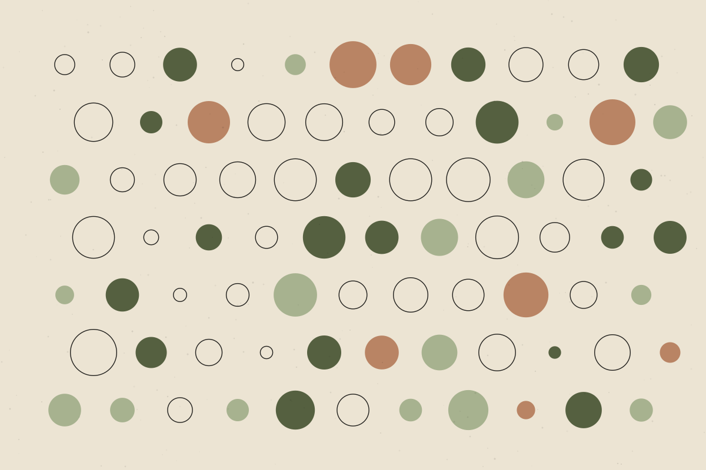

Insulin Resistance Explained Without the Jargon
What insulin does, what ‘resistance’ means, and why it matters for long-term health.

Insulin resistance has become a popular topic, frequently linked online to weight, energy, hormones and almost everything else. Some of that attention is justified. Some of it is not. A clear starting point is to understand what insulin actually does.
What insulin does
Well supportedInsulin is a hormone made by the pancreas. After eating, as glucose enters the blood, insulin helps move it into cells — particularly muscle, liver and fat cells — where it can be used for energy or stored.
You can think of insulin as a messenger that tells cells it’s time to take glucose in. In most people, a modest amount of insulin is enough to keep blood glucose within a healthy range.
What “resistance” means
Well supportedIn insulin resistance, cells respond less strongly to insulin’s signal. To compensate, the pancreas often produces more insulin. For a time, this can keep blood glucose in the normal range, even though the underlying system is working harder.
Because blood glucose may look normal early on, insulin resistance can be present without obvious symptoms. Over time, in some people, the pancreas cannot keep compensating and blood glucose rises.
Why it matters
Well supportedInsulin resistance is closely associated with an increased risk of type 2 diabetes and is a feature of metabolic syndrome. It is also commonly associated with polycystic ovary syndrome (PCOS).
It is not a diagnosis in itself in most routine settings, and it exists on a spectrum rather than as a simple yes-or-no state.
How it is assessed
Clinicians typically look at a combination of factors, including blood tests such as fasting glucose and HbA1c, alongside medical history and other risk factors. Some research tools estimate insulin resistance more directly, but these are not always used in everyday practice.
UncertainHome tests, wearable glucose readings and online quizzes are increasingly marketed for detecting insulin resistance. Their usefulness for people without diabetes is not well established, and results can be easy to misinterpret.
What influences insulin sensitivity
- Physical activity — both aerobic and strength training.
- Body fat, particularly around the abdomen and organs.
- Sleep — short or disrupted sleep is associated with lower insulin sensitivity.
- Genetics, age and some medications.
Well supportedRegular physical activity improves insulin sensitivity. Working muscle takes up glucose, and this effect is one reason exercise is a cornerstone of type 2 diabetes prevention.
Emerging / mixedDifferent dietary patterns can improve markers of insulin resistance. Comparisons between specific diets often show smaller differences than headlines suggest, and the best approach is likely to be one a person can sustain.
A note on responsibility
This article explains a concept; it cannot tell you whether you have insulin resistance. If you are concerned about blood sugar, diabetes risk or PCOS, speak to a doctor who can assess you and arrange appropriate tests.
The bottom line
Insulin resistance describes cells responding less effectively to insulin. It matters mainly because of its links with type 2 diabetes and related conditions — and the most consistently supported ways to improve it are familiar ones: regular activity, adequate sleep and a sustainable dietary pattern.
References & further reading
References below are placeholders. Each must be replaced with a verified source before publication.
- [Reference placeholder] — add a verified source on: insulin physiology (textbook or review). Include authors, year, title, journal and DOI or link.
- [Reference placeholder] — add a verified source on: insulin resistance and type 2 diabetes risk. Include authors, year, title, journal and DOI or link.
- [Reference placeholder] — add a verified source on: exercise and insulin sensitivity. Include authors, year, title, journal and DOI or link.
- [Reference placeholder] — add a verified source on: dietary patterns and insulin resistance (systematic review). Include authors, year, title, journal and DOI or link.
- [Reference placeholder] — add a verified source on: insulin resistance in PCOS. Include authors, year, title, journal and DOI or link.